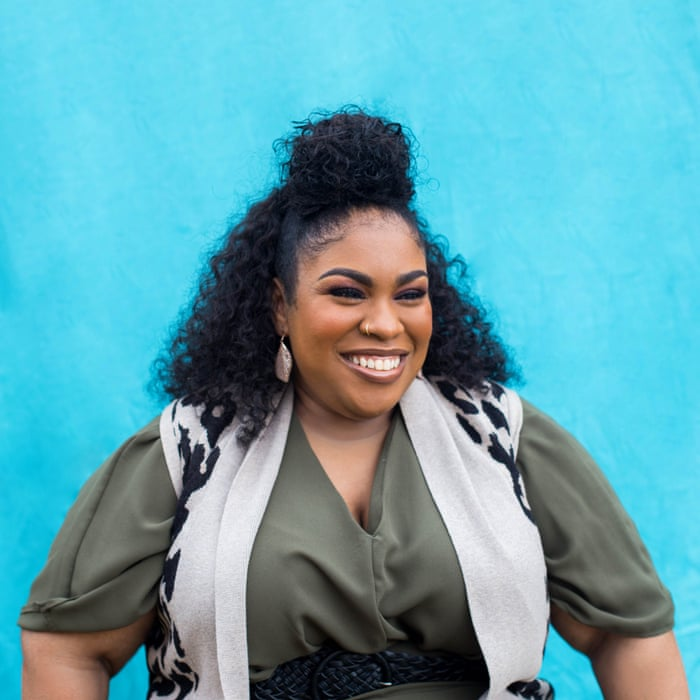
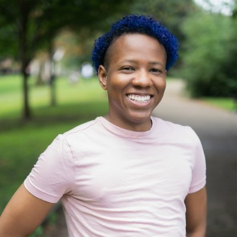
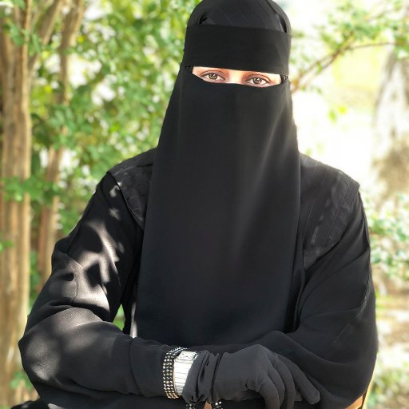

Angie Thomas
"It's important to have diverse characters in books because books give kids mirrors and windows.
Books create empathy. If we don't have diversity, if we're only showing things from one perspective,
how are we creating empathy?"
Melissa de la Cruz
"Diversity is really important because it represents the readership. The world is not made up of all the same people."
Zoraida Cordóva
"There is someone out there who feels like they're not being represented. Everyone should be able to say that they're a hero
in their story."
Angie Thomas
Angie Thomas was born, raised, and still resides in Jackson, Mississippi as indicated by her accent. She is a
former teen rapper whose greatest accomplishment was an article about her in Right-On Magazine with a picture
included. She holds a BFA in Creative Writing from Belhaven University and an unofficial degree in Hip Hop.
She can also still rap if needed. She is an inaugural winner of the Walter Dean Meyers Grant 2015, awarded by
We Need Diverse Books. Her debut novel, The Hate U Give, was acquired by Balzer + Bray/HarperCollins in a 13-house
auction and will be published in spring 2017. Film rights have been optioned by Fox 2000 with George Tillman attached
to direct and Hunger Games actress Amandla Stenberg set to star.
Marie Lu
Marie Lu was born in 1984, in China. She left Beijing for the States in 1989 and went to college at the University
of Southern California. Lu is the author of the New York Times bestselling novels Legend and Prodigy. She graduated
from the University of Southern California and jumped into the video game industry, working for Disney Interactive
Studios as a Flash artist. Now a full-time writer, she spends her spare time reading, drawing, playing Assassin's Creed,
and getting stuck in traffic. She currently lives in Los Angeles (see above: traffic) with her fiancé, one Chihuahua mix,
and two Pembroke Welsh Corgis.

Kacen Callender
Born and raised in St. Thomas of the US Virgin Islands, Kacen Callender is a bestselling and award-winning author of the
middle-grade novels Hurricane Child and King and the Dragonflies, the young-adult novels This Is Kind of an Epic Love
Story and Felix Ever After, and the adult novel Queen of the Conquered and its forthcoming sequel King of the Rising.
They enjoy playing RPG video games in their free time. Kacen currently resides in Philadelphia, PA.

Hafsah Faizal
Hafsah Faizal is the New York Times bestselling author of WE HUNT THE FLAME and WE FREE THE STARS. She’s the founder of
IceyDesigns, where she creates websites for authors and beauteous goodies for everyone else. When she’s not writing, she
can be found dreaming up her next design, deciding between Assassin’s Creed and Skyrim, or traversing the world. Born in
Florida and raised in California, she now resides in Texas with a library of books waiting to be devoured.
Adib Khorram
Adib Khorram is an author, a graphic designer, and a tea enthusiast. If he's not writing (or at his day job), you
can probably find him trying to get his 100 yard Freestyle under a minute, or learning to do a Lutz Jump. He lives
in Kansas City, Missouri, where people don't usually talk about themselves in the third person.
Tracy Deonn
Tracy Deonn is a writer and 2nd gen fangirl. She grew up in North Carolina, where she devoured fantasy books and Southern food
in equal measure. After earning two degrees from UNC-CH, Tracy worked in live theater, video games, and K-12 education. When
she’s not writing, Tracy panels at SFF conventions, reads fanfic, arranges doggy playdates, and keeps an eye out for ginger-flavored everything.
Natasha Ngan
Natasha Ngan is a NYT bestselling author and yoga teacher. She grew up between Malaysia, where the Chinese side of her family is
from, and the UK. This multicultural upbringing continues to influence her writing, and she is passionate about bringing diverse
stories to teens. Natasha studied Geography at the University of Cambridge before working as a social media consultant and fashion blogger.
She recently moved to Paris, where she likes to imagine she drifts stylishly from brasserie to brasserie, notepad in one hand,
wineglass in the other. In reality, she spends most of her time getting lost on the metro and confusing locals with her French.

Aiden Thomas
Aiden Thomas is a New York Times Bestselling author with an MFA in Creative Writing. Originally from Oakland, California,
they now make their home in Portland, Oregon. As a queer, trans, Latinx, Aiden advocates strongly for diverse representation
in all media. Aiden’s special talents include: quoting The Office, finishing sentences with “is my FAVORITE”, and killing spiders.
Aiden is notorious for not being able to guess the endings of books and movies, and organizes their bookshelves by color.Their debut novel,
CEMETERY BOYS, was published on September 1st, 2020.